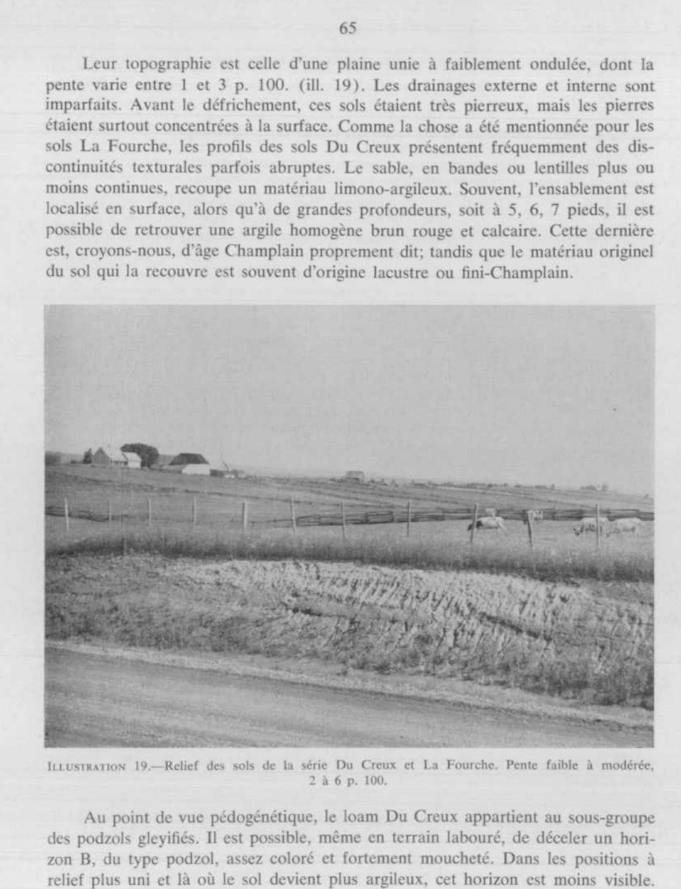

Identification & Caractéristiques Générales
La série La Fourche développe son solum sur des matériaux minéraux meubles associés aux dépôts fluviaux ou fluvio-glaciaires remaniés, souvent recouverts en surface par de minces strates de sables fins et de limons d'origine éolienne ou colluviale. Ces sols se situent topographiquement sur les berges, les terrasses disséquées et les versants à pentes fortes, abruptes ou vallonnées des vallées de rivières actuelles et anciennes, principalement observées dans les régions physiographiques de l'Est du Québec, notamment dans les comtés de Kamouraska et de Rivière-du-Loup. En raison de leur position sur le relief accentué et de la faible cohésion des horizons de surface appauvris en matière organique, ces dépôts présentent une coloration caractéristique blanchâtre à l'état sec ou labouré.
Sur le plan morphologique et hydropédologique, les profils se composent de textures principales de loam ou de loam sableux en surface, évoluant vers des sous-sols de texture plus fine, tels que le loam argileux ou le loam sablo-argileux. La perméabilité interne est modérée, favorisée par la présence de structures pédologiques de type granulaire à polyédrique modéré dans le solum, ce qui contrebalance partiellement la fine granulométrie des sous-jacences. Le drainage naturel varie de modéré à excessif selon la déclivité du versant et la position topographique. Les horizons de surface affichent une carence marquée en matière organique et une faible stabilité structurale, tandis que la réaction du sol tend généralement vers l'acidité.
Les aptitudes agronomiques des sols de la série La Fourche sont sévèrement restreintes par leur topographie accidentée et leur extrême vulnérabilité à l'érosion hydrique, laquelle est accentuée par le ruissellement rapide sur les fortes pentes et l'utilisation de régies de travail du sol inadéquates. Ces contraintes limitent l'utilisation intensive pour les grandes cultures ou le maraîchage, réservant souvent ces superficies aux cultures fourragères permanentes ou à la sylviculture. La mise en valeur agricole de ces sols requiert obligatoirement la mise en place de pratiques anti-érosives rigoureuses, incluant le respect des courbes de niveau, le maintien d'une couverture végétale pérenne, le bannissement des labours intensifs dans les secteurs déclives, ainsi que des apports réguliers de matières organiques et des amendements calciques pour corriger l'acidité.
Classification Taxonomique & Environnement Pédologique
| Ordre Pédologique | Luvisolique |
|---|---|
| Grand Groupe (SCSS) | Luvisol gris |
| Sous-Groupe Taxonomique | Luvisol gris brunisolique gleyifié |
| Famille Pédologique | Loameuse-fine, mixte sableux, acide |
| Mode de Dépôt Parental | Fluvio-lacustre sur lacustre |
| Classe de Drainage Naturel | Modérément bien drainé |
| Régime Thermique & Humidité | Frais / Humide |
Description Morphologique du Profil Type
Séquences génétiques des horizons pédologiques caractérisant le profil type représentatif de la série La Fourche :
Profil représentatif — Comté de Kamouraska
✓ Source : Comté de Kamouraska — Page 62Couleur Munsell : 5Y 8/2
Structure & Consistance : Lamellaire fine
Description morphologique : Loam blanc (5Y 8/2; 6/2 humide); friable; structure lamellaire fine; peu développé; limites nettes et irrégulières; pH 4.3.
Couleur Munsell : 10YR 5/4
Structure & Consistance : Polyédrique peu développée
Description morphologique : Loam brun jaune (10YR 5/4 h.); ferme; structure polyédrique peu développée; pH 4.5.
Couleur Munsell : 10YR 6/3
Structure & Consistance : Lamellaire peu développée
Description morphologique : Loam brun pâle (10YR 6/3, h.); ferme; structure lamellaire peu développée; limites graduelles et sinueuses; pH 5.0.
Couleur Munsell : 7.5YR 6/4
Structure & Consistance : Polyédrique grossière
Description morphologique : Loam argileux brun clair (7.5YR 6/4 h.); ferme à très ferme; structure polyédrique grossière; avec enduits argileux (clay skins) nets; pH 5.2-5.4.
Couleur Munsell : 5YR 5/2
Structure & Consistance : Massive ou très grossièrement polyédrique
Description morphologique : Argile brun rouge (5YR 5/2, h.); très ferme; structure massive ou très grossièrement polyédrique; pH 6.8⊕.
Profil forestier / boisé — Comté de Rivière-du-loup
✓ Source : Comté de Rivière-du-loup — Page 41Couleur Munsell : 10YR 6/2, 10YR 3/3
Structure & Consistance : Polyédrique à granulaire
Description morphologique : Horizon d'humus peu minéralisé, type mor-moder brun-gris pâle (10 YR 6/2 s) à brun foncé (10 YR 3/3 h); limites nettes; pH : 4,5.
Couleur Munsell : 7.5YR 8/2
Structure & Consistance : Faiblement lamellaire peu développée
Description morphologique : Loam blanc à gris-brun clair (7.5 YR 8/2 s; 6/2 h); structure faiblement lamellaire peu développée; friable; limites nettes et irrégulières; pH : 4,3.
Couleur Munsell : 10YR 7/4
Structure & Consistance : Granulaire moyenne à fine
Description morphologique : Loam argileux brun très pâle à brun foncé (10 YR 7/4 s, 4/3 h); structure granulaire moyenne à fine; consistance ferme; limites nettes; pH : 4,5.
Couleur Munsell : 2.5Y 7/2
Structure & Consistance : Faiblement lamellaire en place
Description morphologique : Loam sablo-argileux gris clair à brun-gris foncé (2.5 Y 7/2 s, 4/3 h); mouchetures rares, petites, faibles à distinctes; structure faiblement lamellaire en place, granulaire une fois le sol dérangé; consistance ferme; limite diffuse; pH : 5,0.
Couleur Munsell : 10YR 7/3
Structure & Consistance : Polyédrique grossière
Description morphologique : Loam argileux brun très pâle à brun-jaune foncé (10 YR 7/3 s; 4/4 h); mouchetures communes, faibles à distinctes; structure polyédrique grossière; consistance ferme à très ferme; enduits argileux nets, limites diffuses; pH : 5,2-5,4.
Couleur Munsell : Non précisée
Structure & Consistance : Polyédrique à granulaire
Description morphologique : Roc
Profils Photographiques & Planches de Terrain
Documents iconographiques, figures pédologiques et coupes de terrain documentées dans les mémoires d'inventaire pour de la série La Fourche :

Propriétés Physico-Chimiques & Analyses de Laboratoire
Données Analytiques de Laboratoire
Aucune analyse physico-chimique quantitative de laboratoire (granulométrie par sédimentométrie, pH H₂O/CaCl₂, matière organique Walkley-Black ou bases échangeables) n'a été consignée pour cette unité dans les archives historiques numérisées ou les bases contemporaines EESSAQ/MAPAQ.
Particularités Régionales, Phases & Variantes Pédologiques
Déclinaisons régionales, faciès texturaux, phases d'érosion ou de pierrosité et variantes cartographiées par étude pour de la série La Fourche :
| Étude Régionale | Symbole | Appellation / Phase / Variante | Différenciation avec la série type (Analyse pédologique) |
|---|---|---|---|
| Comté de Kamouraska | Fo |
La Fourche loam | Modalité modale de référence (type de base de la série). |
| Comté de Rivière-du-loup | Fo |
La Fourche loam | Conforme à la série type de référence (caractéristiques texturales et drainage identiques). |
Fos |
La Fourche loam sableux | Faciès textural plus filtrant (loam sableux au lieu de loam). |
Distribution Pédo-Paysagère & Représentativité Cartographique (Couverture PPS 2026)
- Du Creux loam (DUX) — co-occurrente dans 38 polygone(s)
- Affleurements rocheux (ARR) — co-occurrente dans 10 polygone(s)
- Alluvion non différenciée à surface sableuse (ALL) — co-occurrente dans 9 polygone(s)
Aptitudes Agronomiques, Hydropédologie & Conservation des Sols
Indicateurs Hydropédologiques & Vulnérabilité à l'Érosion (BDHP 2026)
Interprétation BDHP : Potentiel de ruissellement modérément élevé. Faible taux d'infiltration, présence d'horizons ralentissant le drainage descendant.
Classement selon l'Inventaire des Terres du Canada (ITC / CLI) : Classe 1.
- Potentiel agricole : Terroir adapté aux cultures régionales selon la texture dominante et la régie de drainage.
- Contraintes majeures : Modérément bien drainé. Risque d'engorgement temporaire ou d'excès d'eau printanier.
- Gestion & Aménagement : Drainage souterrain ou superficiel préconisé sur les terres planes. Chaulage et apport organique régulier selon les bilans agronomiques.
- Cultures adaptées : Grandes cultures (maïs, soya, céréales), prairies fourragères et cultures maraîchères selon le contexte géomorphologique.